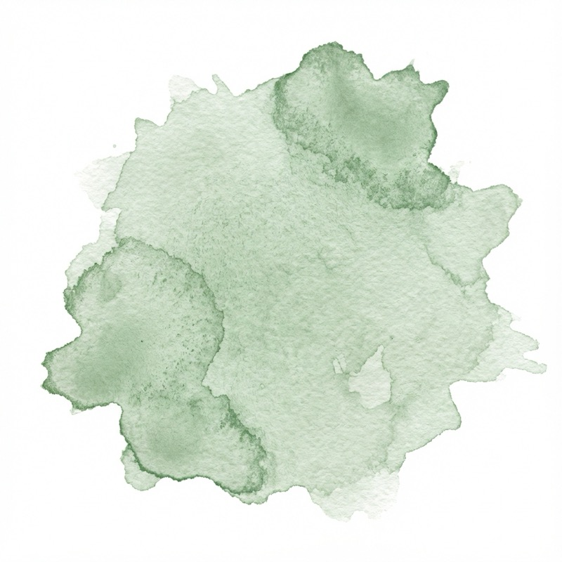

It began with raw canvas
A long stretch of not making anything.
After years away from it, I came back to painting. Large abstracts, on oversized raw canvas I stretched by hand. It was loose, physical work, and it left scraps everywhere.
What I had saved
Velvets, a pearl pin, and 23 karat gold.
The scraps stayed on the table. And I kept thinking about the upholstery swatches I had held onto for years — velvets and wools too beautiful to throw away, saved for something I could not yet name.
So I painted on the canvas scraps and mounted each one to a fabric square with a pearl-topped pin and 23 karat gold leaf. The pin and the gold were the jewelry. I sold them at art fairs first, then from a small gallery-style wall inside a storefront.
Over time the paintings turned into tiny Colorado landscapes, and the landscapes began as single trees. That is where the name comes from: 23 karat, and a tree.

Twenty-three karat, and a tree.
Then people asked for a class
Lessons in a gift box.
I had an infant and a young child at home, so teaching was not possible. Instead I made gift-set lessons for the holidays: pen-and-ink feathers on watercolor paper, a mini handmade watercolor set, and a lesson to follow.
They sold faster than I could draw them, and they pulled me away from painting.
The supplies should be beautiful too
What was missing from the shelf.
That is how I found watercolor workbooks, back when they were only just being discovered. I began stocking them in the shop — other makers' books, not mine — and noticed what was missing. I wanted beautiful supplies and accessories to sit alongside them. Things worth reaching for.
That is the brand. The gold stayed: it is why the logo is gold, why metallics run through the packaging, and why the Colorado 24 carries a metallic gold pan and the rest of the glitz. I think of the metallics as the jewelry for the art.
The studio
A shop, and a bench.
23 Tree Studio is a watercolor art supply and lifestyle boutique in Castle Rock, Colorado, founded in 2023. We keep a shop at The Emporium in downtown Castle Rock, selling our own paint sets, brushes, and the Juliette alongside a curated selection of other watercolor brands.
Running a shop shapes what we make. We watch which supplies people pick up, which ones they put back, and what they come back for — and we design accordingly.
The names
Two of them are my children.
The Juliette is named for my daughter, who loves to dress up; the gingham came from her. The Kaden Traveler is named for my son, who is endlessly curious about the world — as I was, before he arrived. I spent those years travelling the world on my own time, while working as a travel nurse.
The rest of the line shares a sense of place: the Colorado 24, Aspen Grove, Telluride, Ski Town Shimmer, the Studio Essential brushes. The names are not decoration. They are where we are from.
Meredith Thompson · Founder
23 Tree Studio is a one-person operation. I design the products, work directly with the makers who produce them, write the specifications, run the shop and take the photographs. The work is small on purpose — it is how the details stay right.
I am still painting. The original tiny Colorado landscapes continue — adorned with 23 karat gold, pinned to hand-dyed wools. They are made in small batches and sold only at the shop, never online.
Meredith